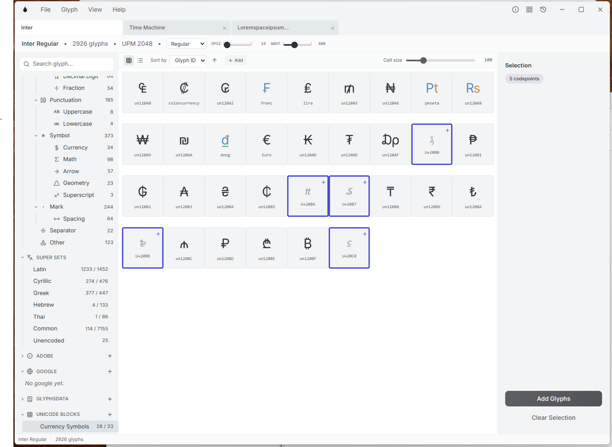
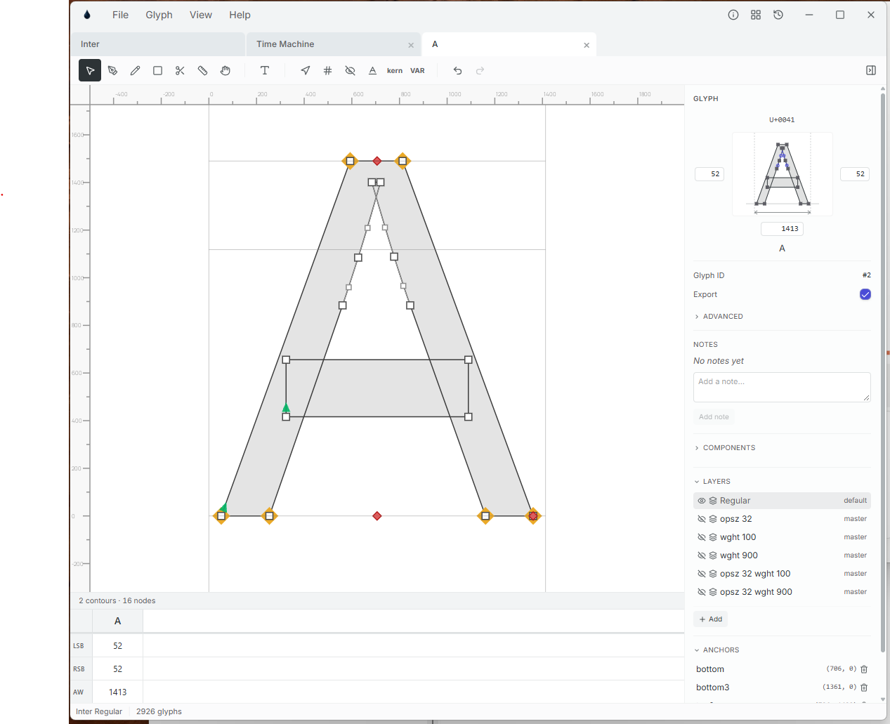
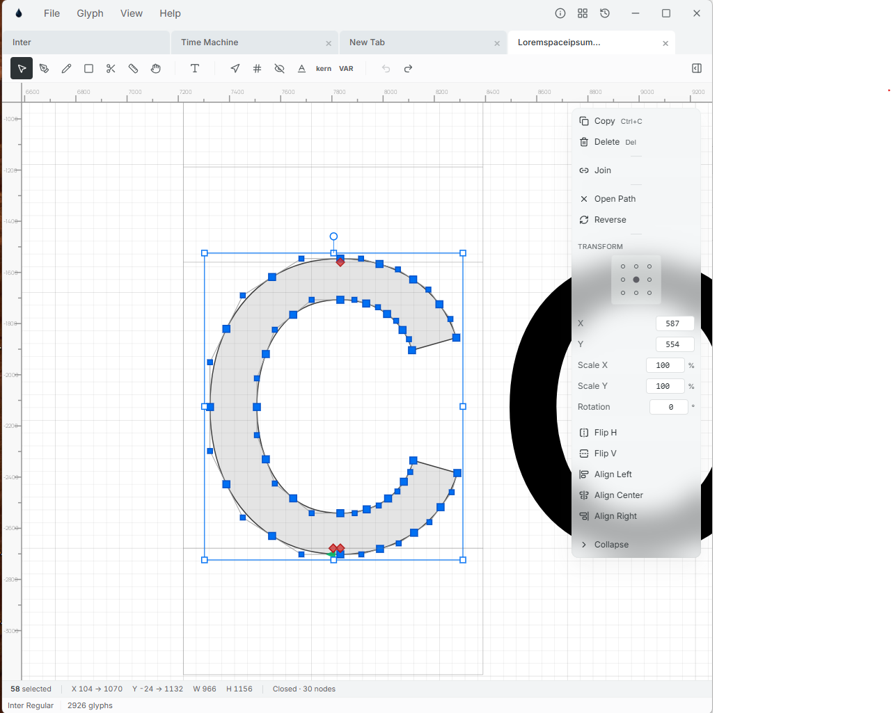
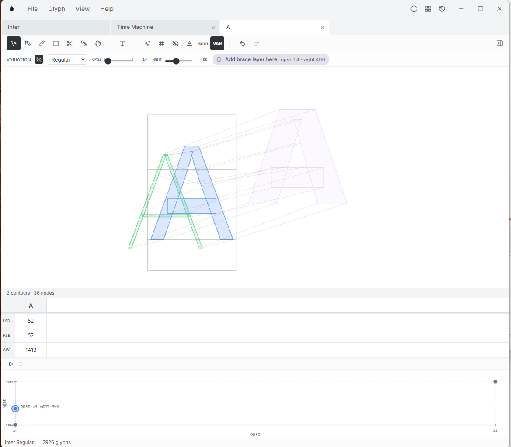
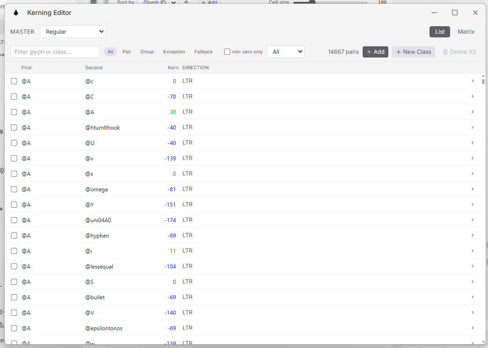
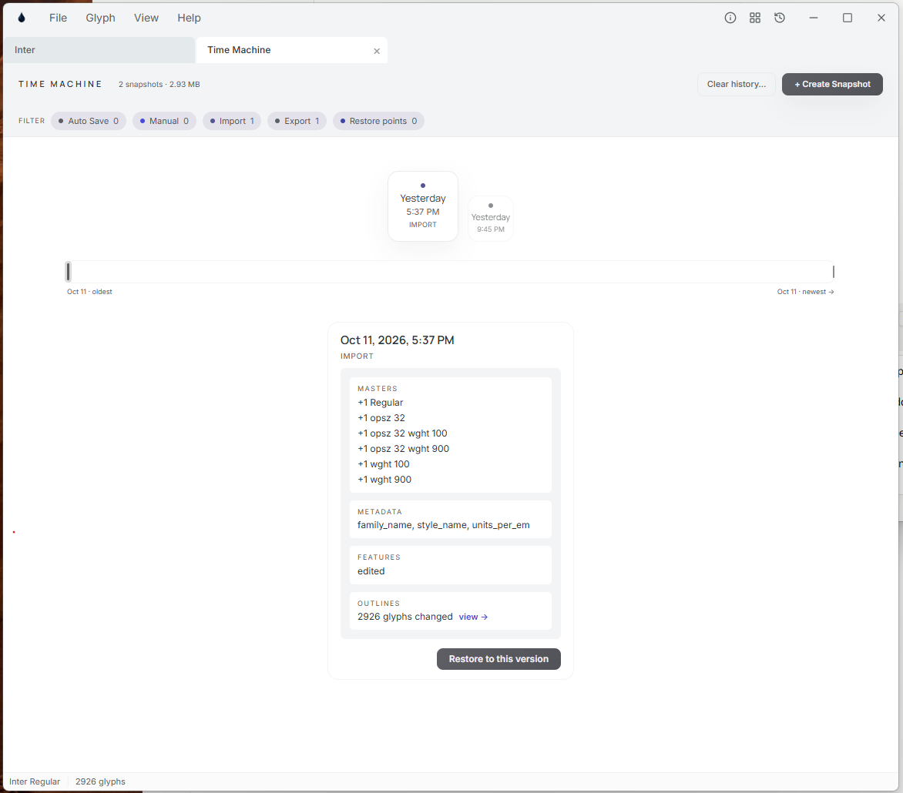
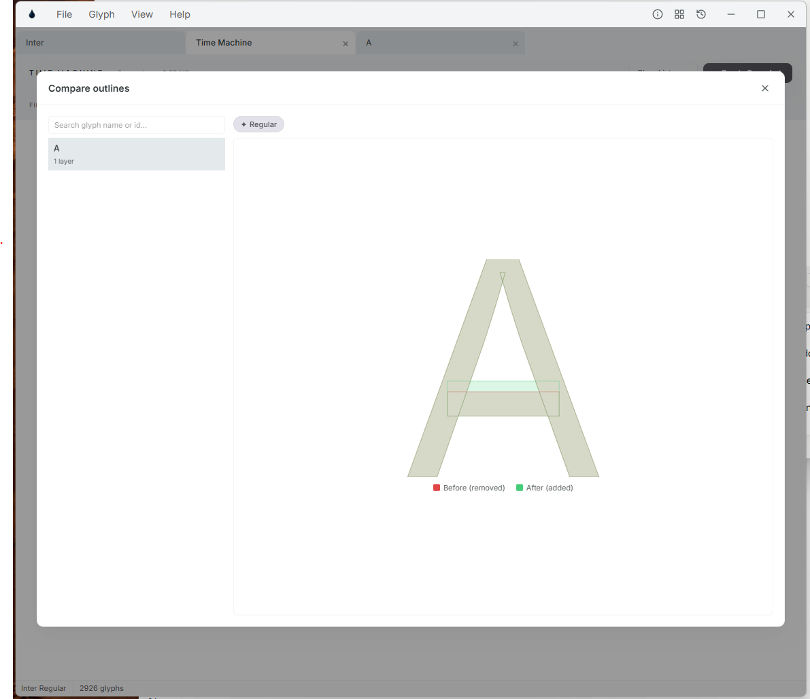

Ink is a cross-platform editor for designing and engineering type — outlines, variable designspaces, kerning and OpenType features — in one quiet workspace that keeps every version of your work inside the file.
If you have drawn a font before, you already know your way around.
Ink borrows the conventions type designers rely on in Glyphs, FontLab, RoboFont and FontForge, so your habits carry over on day one.
A glyph grid organised by Unicode category and script, with coverage counts per set.
Masters, brace (intermediate) layers and instances for variable families.
Class-based kerning with exceptions, in a list or a matrix.
OpenType features written in AFDKO feature syntax, with classes and prefixes.
Opens UFO, .designspace, .glyphs and compiled OTF / TTF fonts.
Python scripting and plugins for automating the dull parts.
Its own spin
Time Machine
Imports, exports, auto-saves and manual save points become snapshots stored in the project. Browse a timeline, diff outlines, restore in one click.
Text mode, inside the editor
Type a line on the drawing canvas and edit any glyph in context, with sidebearings, advances and kerning for the whole line in a table below.
One file, one database
An .ink project is a single SQLite file holding outlines, masters, kerning, features and history — easy to copy, back up and hand over. How it works →
Binary fonts, editable again
Open a compiled OTF or TTF and Ink turns its kerning, mark attachment and GSUB / GPOS lookups back into editable data and feature code.
Compatibility, built in
A checker flags glyphs whose masters will not interpolate — before export, not after a failed build.
Plugins in HTML and Python
Plugins dock as sandboxed web panels with a JavaScript SDK, and hand heavy work to Python scripts in an environment Ink installs and manages.
A tour of the workspace
Every view docks as a tab, so the grid, editors and history sit side by side.
01 — Grid view
The whole font at a glance
The sidebar sorts all 2,926 glyphs of Inter by category — Letter, Number, Punctuation, Symbol, Mark — and by script super sets with coverage counts such as Latin 1233 / 1452. The opsz and wght sliders above the grid preview any point in the designspace. The inspector edits the selected glyph's sidebearings and advance width, its export flag, a color label and its left and right kerning groups.
02 — Glyph sets
Fill the gaps without typing code points
Browse Unicode blocks, Adobe and Google glyph sets or GlyphsData lists. Glyphs the font is missing appear as ghost cells; pick the ones you need — here five currency symbols — and Add Glyphs creates them in one step.


03 — Glyph editor
Outlines, with every master on hand
Draw with pen, pencil, shape and knife tools on a Skia-rendered canvas. The inspector shows a live thumbnail with sidebearings, a layer list for every master (Regular, opsz 32, wght 100, wght 900…), notes, components and anchors with their coordinates. The strip under the canvas keeps LSB, RSB and advance width editable.
04 — Selection & transform
Precise edits from a floating panel
Select nodes and the panel offers copy, join, open path and reverse, then a nine-point origin grid for exact X and Y, scale, rotation, flips and alignment. The status bar reports the selection count, its bounding box and the contour's node count as you work.


05 — Variation preview
See the designspace while you draw
Switch on VAR and every master is overlaid, with lines joining matching points. Drag the axis sliders — or the location on the designspace plot below — and Ink offers to add a brace layer at that exact spot, here opsz 14 · wght 400.
06 — Text mode
Edit glyphs in the words they live in
Type a sentence right on the editing canvas and every glyph in it becomes editable in context. A preview strip renders the line under the cursor, and the table below lists LSB, RSB, advance width and kerning for each glyph in the line.
General holds identification and common OpenType values — family and style names, style-map, units per em, version and copyright — next to Masters, Designspace, Names, Features, Advanced and Compatibility. In Features, classes, prefixes and features sit in a list beside a code editor; Validate compiles the code and reports errors and warnings by feature and line.
08 — Kerning editor
Fourteen thousand pairs, still findable
Pick a master and filter its pairs by kind — pair, group, exception or fallback — or show only non-zero values. Each pair carries its direction, LTR or RTL. Switch to Matrix to work class against class, create new classes, and delete selected pairs in bulk.



09 — Time Machine
Every version, one click away
Snapshots line up on a timeline you can filter by auto-save, manual, import, export and restore points. Each card summarises what changed — masters, metadata fields, features, outlines — and “view →” opens a diff with the old shape in red and the new one in green. Restore to this version when you need to go back.
How-to
Manuals
Technical guides to the parts of Ink that reward a closer read.